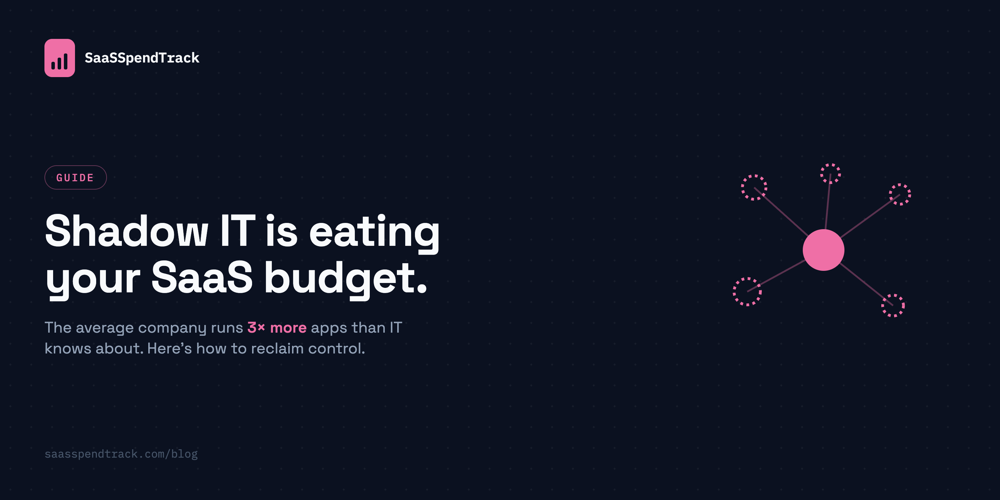

Shadow IT Is Eating Your SaaS Budget: How to Find (and Fix) the Apps Nobody Approved
The average company has 2–3x more SaaS subscriptions than IT knows about. Here's a practical guide to discovering them, quantifying the waste, and regaining control- without killing the agility that made your team productive in the first place.
The SaaS Sprawl Nobody Planned For
Shadow IT used to mean rogue servers under someone's desk. In 2026, it means the 47 SaaS subscriptions your company pays for that nobody in finance or IT has a complete list of.
Here's how it happens: a product manager signs up for a prototyping tool on a 7-day free trial. It converts to $25/month on the company card. A marketing coordinator subscribes to a social scheduling tool at $49/month. An engineer starts a monitoring service at $30/month. Each decision is small, reasonable, and invisible to everyone outside the buyer's team.
Multiply this by every team, every quarter, for three years. The result is a SaaS portfolio that nobody fully understands, where the total spend is consistently 30–50% higher than what shows up in the official software budget.
Research shows that the average seed-stage startup uses 25–40 SaaS tools within its first year, and that most companies concentrate 70–80% of spend in 5–7 core tools. That means the remaining 50+ applications in your stack- the long tail- account for 20–30% of spend, and most of them were never centrally approved, evaluated, or tracked.
Why Shadow IT Costs More Than the Subscription Price
The subscription fee itself is just the visible cost. The hidden costs of unmanaged SaaS are where the real money leaks:
Duplicate functionality across departments
When purchasing happens without centralized visibility, different teams inevitably buy overlapping tools. Three departments with three different project management platforms. Two analytics tools pulling the same data. Marketing using one email tool while sales uses another that does the same thing. Each team has a valid reason for their choice, but nobody sees that the combined cost of three $200/month tools could be replaced by one $400/month tool- saving $200/month and simplifying the stack.
Orphaned subscriptions
When the person who signed up for a tool leaves the company, the subscription often continues billing because nobody else knows it exists. These "orphaned" subscriptions accumulate at roughly the rate of employee turnover- and in a company with 20% annual turnover, that means one in five tool subscriptions may be billing with no active champion or user within 12 months.
Security and compliance exposure
Every unapproved SaaS tool that handles company data creates a potential compliance gap. If a marketing tool stores customer email addresses, it falls under data protection regulations- whether or not IT vetted it. If an engineering tool has access to source code repositories, it's a potential security vector. The risk isn't theoretical: shadow IT is one of the most common vectors for data exposure incidents because these tools sit outside the normal security review process.
How to Find Shadow IT Without Enterprise Tools
Enterprise SaaS management platforms use SSO integration, browser extensions, and network traffic analysis to automatically discover shadow IT. Those tools cost $30K+ per year. If you're not at that scale yet, here are four methods that work just as well- they just require a few hours of manual effort:
Credit card and expense report audit
Pull 12 months of corporate card statements and expense reports. Search for recurring charges under $500/month- the sweet spot where subscriptions fly under approval thresholds. Sort by vendor and flag anything that isn't in your official software inventory. This alone typically uncovers 40–60% of shadow IT.
Email domain registration scan
Search company email accounts for registration confirmation emails from SaaS vendors ("Welcome to [Product]", "Your account is ready", "Confirm your email"). These are breadcrumbs- every SaaS signup sends one, and they're rarely deleted. Cross-reference with your known vendor list.
Department head survey
Ask each department head a simple question: "What software tools does your team use daily, weekly, and monthly?" Compare their lists against accounting records. The gap between "tools we pay for" and "tools people use" reveals both shadow IT (tools people use that aren't tracked) and waste (tools we pay for that nobody uses).
SSO and OAuth connection audit
If you use Google Workspace or Microsoft 365, check which third-party applications have OAuth connections to your company accounts. These connections often persist long after someone stops using the tool, creating both a security risk and a clue about untracked subscriptions.
The Fix: Visibility Without Bureaucracy
The worst response to shadow IT is creating a bureaucratic procurement process that requires three approvals and a two-week review for every $25/month tool. That kills the agility that made your team productive. The right response is visibility first, governance second.
The Visibility-First Framework
Step 1: Discover. Use the four methods above to build a complete inventory of every SaaS tool in your company. This is a one-time exercise that takes 2–4 hours.
Step 2: Centralize. Put every discovered tool into a single dashboard with its cost, owner, user count, and renewal date. This is the single source of truth that finance, IT, and department heads can all reference.
Step 3: Track going forward. Set a simple rule: any new SaaS purchase gets logged in the dashboard within 48 hours of signup. No approval required- just visibility. The goal isn't to block purchases; it's to ensure nothing goes untracked.
Step 4: Review quarterly. Every quarter, review the dashboard for waste: unused tools, duplicate functionality, and upcoming renewals. This 30-minute review consistently identifies $5K–$15K in recoverable waste per quarter for a mid-size company.
This approach works because it doesn't slow people down. Teams can still move fast and choose the tools they need. The only thing that changes is that someone- anyone- has a complete picture of what the company pays for.
SaaSSpendTrack is designed for exactly this workflow. Discover your tools, add them to the dashboard (upload contracts from Google Drive or add manually), set renewal alerts, and start tracking spend by department, vendor, and per-user cost.
Try SaaS Spend Track for seven days with a work email. No credit card required.
What Happens After You Shine a Light
The first discovery is always surprising. Companies consistently find 30–50% more active subscriptions than they thought they had. The immediate reaction is often alarm- "we're spending how much?"- followed by a sobering realization that this is fixable.
Month one typically delivers the quick wins: canceling 3–5 tools that nobody uses, consolidating 2–3 duplicate tools, and flagging upcoming renewals for renegotiation. These quick wins usually recover $5,000–$15,000 immediately.
Months two and three are about building the habit. New purchases get logged in the dashboard. Renewal alerts start firing, and someone actually acts on them. The quarterly review becomes a standing calendar item rather than a forgotten good intention.
By month six, the company has a fundamentally different relationship with its SaaS stack. The CFO knows exactly what software costs. Department heads can justify their tools with usage data. Renewals are proactive negotiations rather than passive auto-charges. And shadow IT stops being a recurring problem because the dashboard makes invisible spending visible by default.
The goal was never to eliminate shadow IT entirely- some decentralized purchasing is healthy. The goal was to make sure someone, somewhere, can see the full picture. That's the difference between managed SaaS and unmanaged SaaS. It's also the difference between a budget that's under control and one that's slowly, silently bleeding.
Turn invisible spend into visible savings.
Try SaaS Spend Track for seven days with a work email. No credit card required.
Start free trial